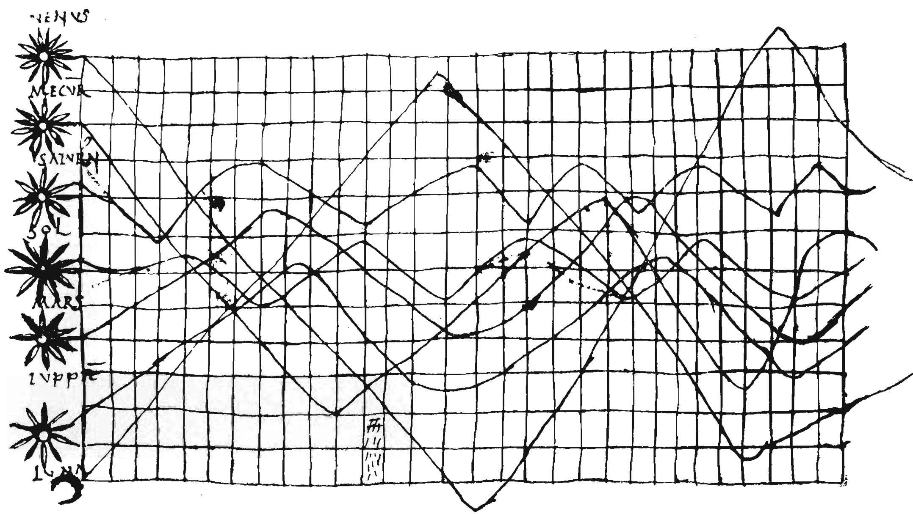
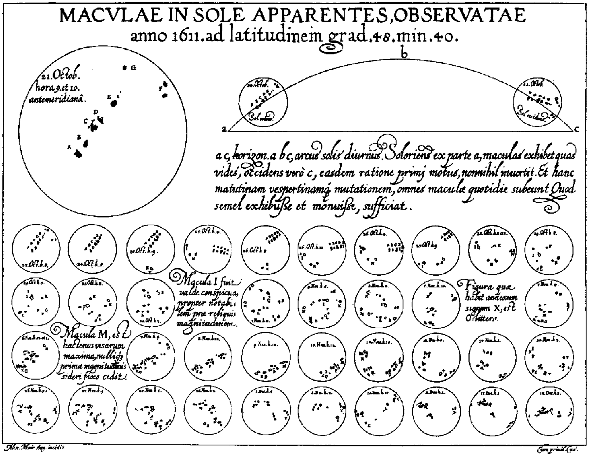
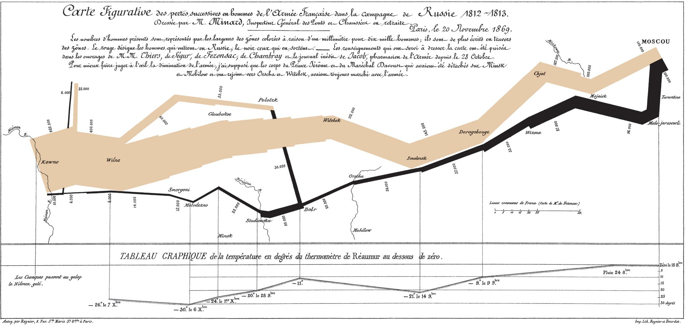
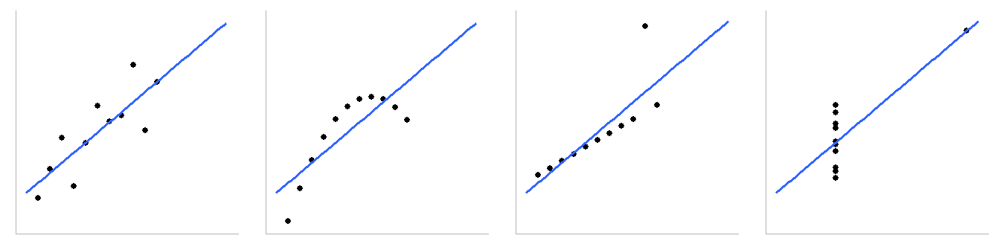
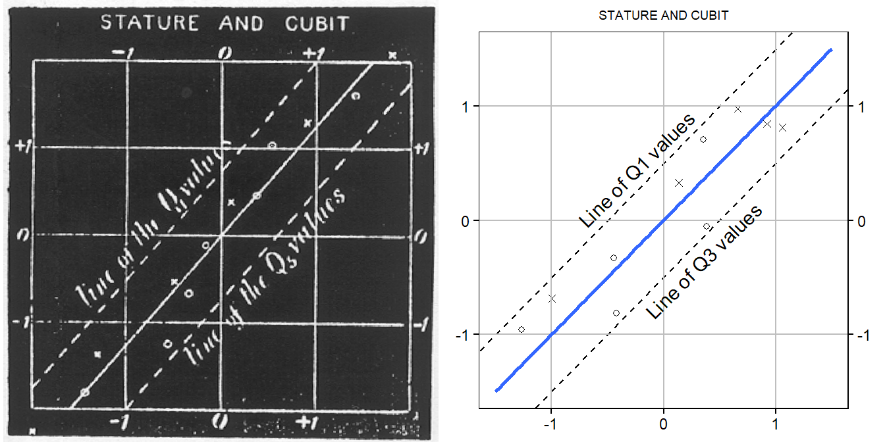
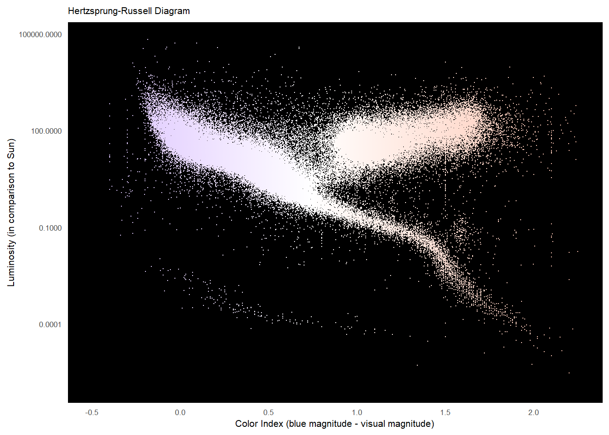
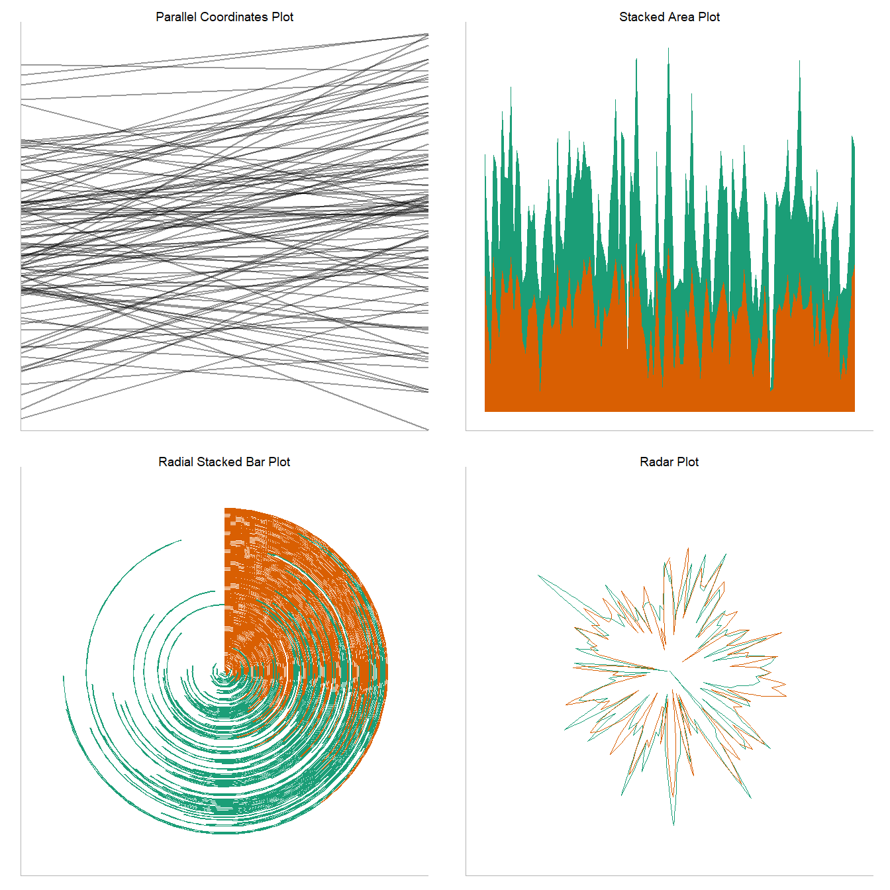
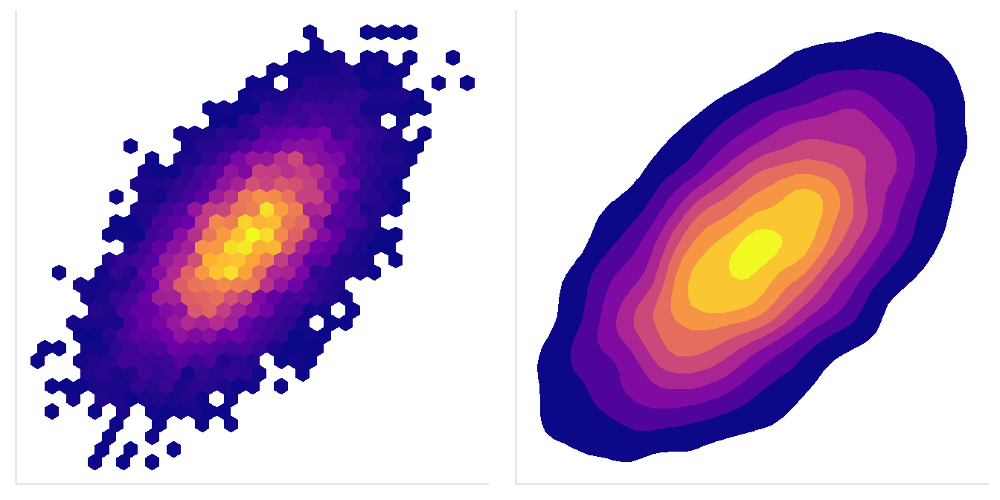

related_work
Data Visualisation: A Brief History
Data visualisation, which can be thought of as the practice of representing information in a visual modality , is difficult to concretely define, classify, and categorise. With the primacy of vision with regards to our interactions with and interpretations of the world around us, data visualisation may be thought of as an extension of art and the written word. Both art and writing are ancient phenomena, with evidence for the former being found in the prehistoric period some 66,000 years ago , and evidence for the latter emerging as Mesopotamian cuneiform around 3200 B.C.E . Broadly, the literature agrees that art emerged prior to the written word; this speaks volumes of the human instinct to represent our thoughts, feelings, emotions, and the ways that we interact with the world pictorially. This instinct has not waned, and modern computing makes it easier than ever for those of us with no technical or artistic skills to create graphics and visualisations that tell stories about our data in ways which are both beautiful and practical.
When, then, should we consider to be the emergence of data visualisation as a human practice? Schmandt-Besserat considers clay counting tokens to be the direct precursor of the written word; while the evidence for this link is controversial , the existence of such tokens is not. With each shape of token representing a certain amount of a certain good (measures of grain, jars of oil, etc.), this system could be considered a very early, very simple form of data visualisation (or physicalisation ). Similarly, there is limited evidence of prehistoric cartographic drawings , which may also be considered a form of, or related to, data visualisation. While I am not asserting that data visualisation is older than writing, or that ancient map drawings are equivalent to modern graphics, the existence of these representations emphasises the attractive convenience that symbols and signs represent for humans; making sense of our world and the relationships therein is often easier through pictures as opposed to words and numbers, a principle which I consider key for this thesis.
Moving on, then, to the kind of pictorial representation that modern students and scientists would firmly recognise as a “data visualisation”. Tufte and Graves-Morris, in 1983’s seminal The Visual Display of Quantitative Information , describe an unattributed time series illustration from the 10th or 11th century, itself described by Funkhouser in 1936 as being discovered by Sigmund Günther in 1877. This illustration is included here in Figure 1.
This illustration purports to show the movements of planetary bodies as a function of time, although Funkhouser considered it little more than a “schematic diagram…for illustrative purposes” . Regardless, the recognisable grid lines and sinusoidal variation in the curves are ideas that would not appear again for another 600-700 years, after which they would become mainstream visualisation techniques. In the mid-14th century, French philosopher Nicole Oresme demonstrated an understanding of graphing by plotting proto-bar charts, and by the 16th century, advances in cartography, photography, and mathematics laid the ground for an explosion in data visualisation.
The 17th century saw the birth of geometry and coordinate systems, error measurement, probability, and demographic statistics. With these scientific advancements came the advancements in data visualisation needed to communicate these concepts. For example, in 1626, Scheiner used what Tufte would later term the “principle of small multiples” to illustrate how configurations of sunspots change over time (see Figure 2).




The latter half of the 19th century, the so-called “Golden Age of Statistical Graphics” saw the rise of forms of data visualisation that begin to look remarkably similar to the graphs and informatics seen in mass media and scientific publication today. The most notable examples of these are John Snow’s cholera map, which was able to link the incidence of cholera to a contaminated water pump in London (Figure 3), Charles Joseph Minard’s flow chart of the Napoleonic invasion of Russia (Figure 4), and Florence Nightingale’s rose diagrams (polar area charts in the modern parlance, see Figure 5). In each of these graphs, visualisation is used with different intent. In John Snow’s cholera map, visualisation was used to track cases of a deadly disease, and facilitated a novel linkage between cholera and contaminated drinking water. In Charles Joseph Minard’s flow chart of Napoleon’s failed 1812 invasion of Russia, a total of six variables are displayed to tell the data story, allowing the viewer to appreciate the movements of the Grande Armée, it’s diminishing size owing to attrition, and the freezing temperatures that largely caused that attrition. Florence Nightingale’s polar area chart depicts the causes of mortality amongst British troops in the Crimean War; charts such as this were used to successfully campaign for better sanitation in hospitals and the front lines.
In all of these visualisations, data is used to accentuate storytelling. In some cases, this may lead to critical discoveries that save lives, and in others, it may simply facilitate a greater understanding and appreciation of the data. In either case, visualisation is used effectively to appeal to our affinity for visual storytelling. An appetite for precision defined the approach to statistical thinking, and by extension, data visualisation, in the first half of the 20th century. Statistical graphics finally became mainstream, and were implemented in curricula and used in government, commerce, and finance. This period also marks the beginning of graphical methods being used to generate new scientific insights, a trend which would only accelerate throughout the next century.
Significant developments in the latter half of the 20th century laid the final brick in the foundations of what would become the modern data visualisation landscape. John W. Tukey’s The Future of Data Analysis proposed a separation between data analysis and mathematical statistics. This seminal work would become hugely influential, and Tukey would go on to invent a great number of analysis-driven data visualisations, including stem-leaf plots and box plots, both of which are now commonplace in software packages and statistics education. In 1967, Jacques Bertin published Sémiologie graphique (Semiology of Graphics), organising the perceptual elements of data visualisations according to their features and their relationships to the underlying data; this work would be influential for Leland Wilkinson’s Grammar of Graphics , which in turn influenced the ggplot2 package that is used extensively in this thesis.

Since then, both the practice and study of data visualisation have become thoroughly mainstream. Students are taught to visualise data early on, and the propagation of both software and powerful computing hardware have brought advanced techniques, such as high dimensional visualisation and massive datasets, into the home. To summarise the timeline of developments in data visualisation over the last 500 years, I include a rug and density plot from Friendly (2008) in Figure 6. Recounting a full and detailed history of the practice and study of data visualisation would require much more than a single thesis, and has been done to a very high standard elsewhere . Given that this thesis is focused on the perception of correlation in scatterplots, the remainder of the chapter is primarily limited to discussions of relatedness, correlation, and scatterplot visualisations.
Visualising Correlation

Of course, while mathematically sound, a single value provides no information about the distribution of variables from which it was derived. To do this, the data must be examined visually. Here arises a parallel; in much the same way as Francis Galton used a proto-scatterplot to formulate his definition of correlation, so must data visualisation be used to tell the story behind a value of Pearson’s r. The need for visualisation is most viscerally illustrated by Anscombe’s quartet , which is recreated in Figure 7 using a dataset from the datasets core package in R. Anscombe’s quartet describes four simple datasets that are identical with regards to a range of statistical measures. They feature the same number of observations, the same means, regression coefficients, regression line equations, sums of squares, estimated standard errors, and correlation coefficients. A simple examination of these statistics would lead to the conclusion that the datasets are almost identical; in reality, there are significant differences between them that can only be seen via visualisation.
In this thesis, the primary concern is correlation and the ways in which people interpret it from scatterplots. The remainder of this section examines the history and current landscape of correlation visualisations. Starting with Galton’s scatterplot precursors, I then go on to discuss the development of the familiar modern scatterplot through the examination of a number of impressive use cases. Following that, I review the current landscape of correlation visualisation, including the more recent use of other, non-scatterplot graphs.
History

ggplot2 on the right.
As mentioned in Section \(\ref{relatedness-and-correlation}\), Francis Galton based his initial formulation of the correlation coefficient on hand-drawn plots of the semi-interquartile ranges of two variables. Figure 8 contains a negative scan of Galton’s original plot, along with a modern recreation using ggplot2. Despite the importance of graphics like these for Galton’s discovery of regression, statistical correlation, and the relationship between these and the bivariate density function , a more true example of a scatterplot can be found in much earlier work on the orbits of twin stars by John F. W. Herschel . Unfortunately, this scatterplot was never printed in Herschel’s 1833 manuscript, however can be inferred thanks to a detailed description of both the figure and the logic behind it. In short, Herschel wished to ascertain the orbits of binary star systems by using (often imprecise) astronomical measurements of certain angles and distances made over a long period of time. It is the imprecision in measurement which necessitated data visualisation, as precise measurements would allow common astronomical principles to provide precise solutions. First specifying the axes, angles of position (\(y\)) and date of observation (\(x\)), and grid lines, Herschel then describes plotting points and drawing, by hand, a line-of-best-fit. A particularly enlightening quote, with original emphasis, is reproduced below:
From this smoothed-by-eye line, Herschel was able to calculate the parameters that determined the rotation of the \(\gamma\)Virginis system. Herschel beat out Galton by more than 50 years to claim the first scatterplot, in a remarkable feat of using graphing to solve an astronomical problem. Just a few decades after Galton had discovered the concept of correlation, yet another astronomical example of a scatterplot can be found in the Hertzsprung-Russell diagram, created independently by both Ejnar Hertzprung and Henry Norris Russell in 1911-1913 . This type of scatterplot, which still sees use in modern astronomy, plots stellar luminosity against colour (temperature). I have plotted an HR diagram in Figure 9 using the HYG database 1.

The clear band that can be seen in Figure 9 from top-left to bottom right are “main sequence” stars. It was only by visualisation that astronomers were able to determine that there were laws that govern the formation and evolution of stars. Spence and Garrison conducted a detailed analysis of the history and development of HR diagrams, and conclude that they represent a “shining example of the power of graphic display”. Again, it was the ability of the data visualisation to facilitate pattern recognition in its human viewers that was so crucial to its (continuing) success.
While this section has not been an exhaustive list of every scatterplot and scatterplot-alike that has prominently featured in scientific publishing since Herschel’s initial description and Galton’s initial formulation of correlation, I hope that I have conveyed the importance of this visualisation type. As we will see in Section \(\ref{present-landscape-corr-viz}\), the landscape of correlation visualisation is now much broader, however the humble scatterplot still remains a crucial part of the visualiser’s toolbox. From its origins as a way of inferring astronomical relationships, to its use in the discovery of correlation, the standard scatterplot remains largely unchanged to this day; this thesis charts the development of a new type of scatterplot that draws on key elements of human perception to increase its utility in correlation visualisation, however it is important to pay homage to the history of the visualisation as an ever-present lab mate to those willing and able to use graphing to solve scientific problems.
Present Landscape

GGally package ; Stacked area plot; radial stacked bar plot (doughnut plot); radar plot. Each plot uses the same dataset with an r value of 0.6.

When I began this project in the autumn of 2021, I believed that scatterplots were the first and last word when it came to visualising correlation. I soon discovered that this was not the case; as scientists often do, a whole host of other visualisation types had been designed or adapted in an effort to better visualise correlation. Parallel Coordinates Plots (PCPs) , which are popular in the InfoVis community, are most often used for multidimensional data. Applying them to bivariate data results in plots that perform (almost) as well as scatterplots with regards to visualising correlation between two variables . Figure 10 illustrates parallel coordinates plots, along with 3 other types of correlation visualisation, with an r value of 0.6. Despite the existence of plots such as these, scatterplots remain by far the most popular way of visualising correlation. With the exception of the charts featured in Figure 10, many other ways of visualising correlation are density-flavoured remixes of traditional scatterplots, such as Hexbin plots and Kernel Density Estimate plots (see Figure 11). While there may be many, often more visually appealing ways of visualising correlation, traditional scatterplots offer a number of distinct advantages.
Scatterplots
In a large scale study, Harrison et al. tested a range of correlation visualisation types, including scatterplots and those depicted in Figure 10, to see if precision in correlation estimation could be modelled by Weber’s law . In short, the perception of differences in correlation has a linear relationship to the objective differences in correlation. In this study, itself a replication of a previous work investigating Weber’s law for the modelling of perceived correlation , participants were asked to make discriminative judgements between side-by-side correlation visualisations. An adaptive staircase procedure was employed to infer just-noticeable differences (JNDs) for correlation perception with nine correlation visualisation types. Both positive and negative correlations were tested. Fitting linear models to the JND data revealed that correlation discrimination in the nine different visualisations tested (scatterplots, PCPs, stacked area charts, stacked line charts, stacked bar charts, donut charts, radar charts, line graphs, and ordered line graphs) could be modelled using Weber’s law. This study also provides a ranking of the tested visualisation types with regards to participant’s correlation discrimination performance; overall, traditional scatterplots outperformed all other visualisation types with positively correlated data, and were tied with PCPs for negatively correlated data.
Rensink (2014) measured correlation discriminability for scatterplots presented at 100, 400, or 1600 milliseconds. This study found that performance was almost identical for scatterplots presented for either 400 or 1600 milliseconds, and that there was only a small deterioration in performance for those presented for 100 milliseconds. The lack of performance improvement for longer presentation times both facilitates the rapid collection of large amounts of data and speaks to the intuitive nature of correlation perception in scatterplots.
Finally, scatterplots, in addition to outperforming other visualisation types and featuring rapid interpretation, are also ubiquitous. In 1983, scatterplots were estimated to account for between 70% and 80% of data visualisations in scientific publications . With the advances in computers and graphing techniques seen since then, this proportion is certainly lower today. Regardless, scatterplots, their derivatives, and their remixes can be seen not only in scientific and technical publication, but also in the news and mass media. This combination of advantages makes them particularly suitable for scientific study, and was part of the reason I chose to pursue this project.
Despite this host of advantages, the estimation of correlation suffers from routine underestimation by viewers. To understand this bias with a view to correcting for it, I first explore the perception of correlation more generally, before briefly discussing the more cognitive aspects of the measure, which are especially relevant for the experiment described in . I then deal with the problem itself; the underestimation of correlation in positively correlated scatterplots, before finishing this chapter by discussing data visualisation and statistical literacy and stating the research objectives and contributions of this thesis.
Correlation Cognition
Thinking about the ways in which variables are related to one another is more complicated than simply perceiving the differences in relatedness. Particularly due to the speeds with which people are able to judge correlations , experiments that aim to investigate cognition require more complicated designs. Generally, interacting with data visualisation is a complex process involving bottom-up and top-down mechanisms . Visualisation design methodologies often begin by clarification of the problem space ; the problem I chose to address was the underestimation of correlation in positively correlated scatterplots. Due to this problem being perceptual in nature, I began by focusing on, and attempting to exploit, aspects of human perception. Only once I felt that this had been explored did I begin examining this problem from a top-down, cognitive point of view; these efforts are detailed in .
Regardless, an account of how correlation is thought about by viewers is not a contribution of this thesis. Section \(\ref{future-work-chap8}\) in discusses how the findings presented in this thesis may be extended further into a cognitive space to more rigorously interrogate the effects found in the final experiment.
Objectives and Contributions
In this thesis, I aim to answer three high-level research questions:
- Are there effects of changing the sizes and opacities of scatterplot points on performance on a correlation estimation task?
- Can these changes be used to correct for a historic underestimation bias?
- Are these effects only perceptual, or do participants integrate them cognitively such that they may influence beliefs about correlations?
The justifications and motivations for these research questions may be found in the experimental chapters where they are most relevant. Both in answering the above questions and in conducting this project more generally, I hope to make the following contributions:
- There are clear and strong effects of changing the opacities and sizes of points on scatterplots, both in uniform ways, and using functions that draw inspiration from the nature of correlation perception.
- These effects can be used to correct for the historic underestimation bias, without removing data, although significantly more work is needed to find the exact combinations of size and opacity adjustments that produce perceptually-optimised estimates.
- These effects do extent into a cognitive space, and are able to influence people’s beliefs about the levels of relatedness between variables.
- This project is exemplar of one done in an entirely open and reproducible manner.
Footnotes
https://www.astronexus.com/projects/hyg↩︎